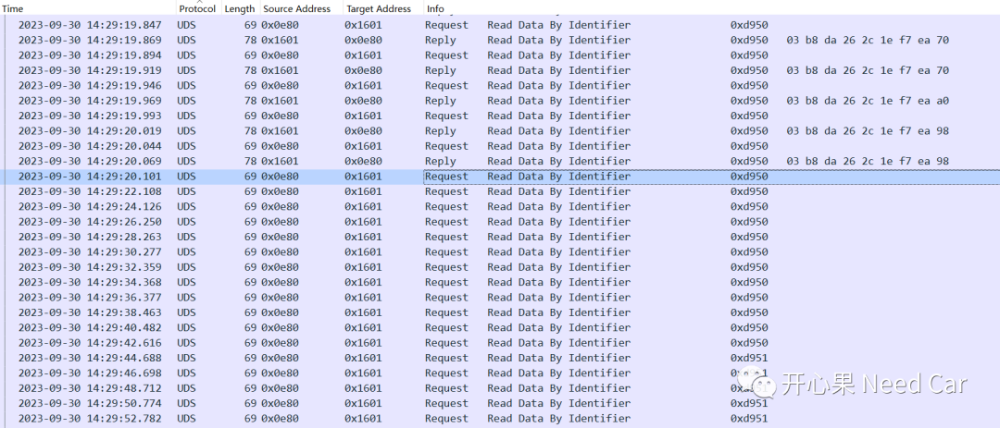
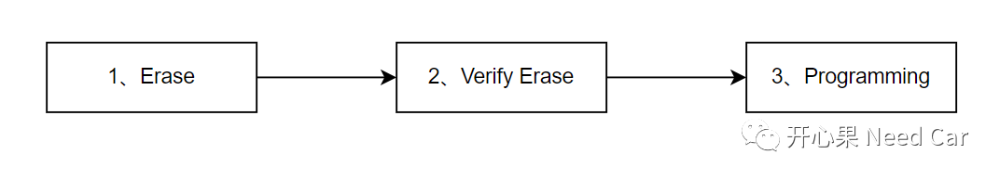
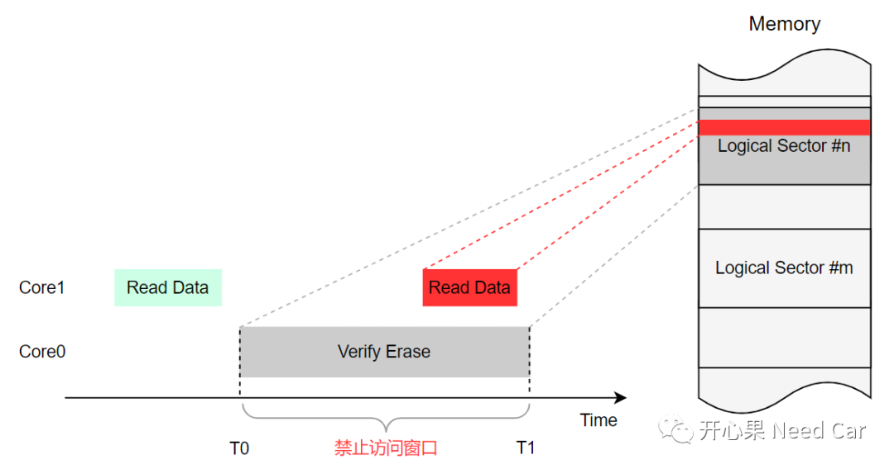
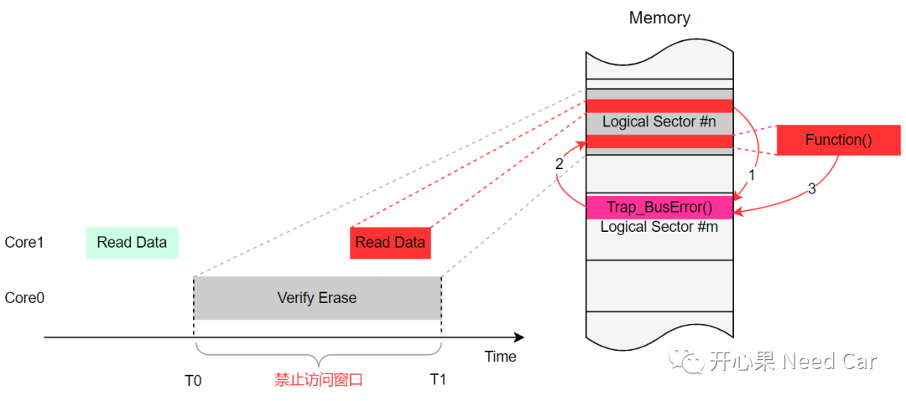
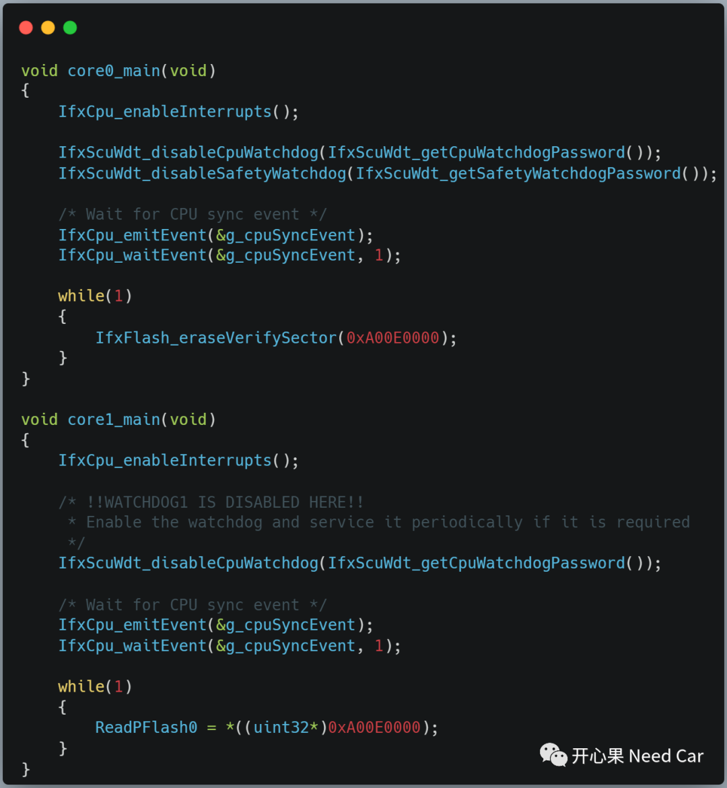
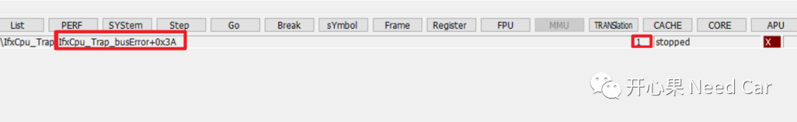

开心果 Need Car · 2023-10-13T07:09:00+08:00 · 微信原文
在之前的文章中，和大家提到过：内存无小事。对于内存的操作，稍有不慎就会带来问题。如果操作UCB（User Configuration Block），由于此区域属于固件区，关系程序的启动行为，操作不当就可能导致芯片锁死。eg：玩SOTA（Software Over the Air）的小伙伴，是否锁过板子呢？如果操作PFlash，多核同时访问同一个Sector，操作不当就可能导致Bus Error Trap；如果操作DFlash，且被一些信息安全模块（eg：HSM，Hardware Security Module）设置成独占区，操作不当，也可能会导致Bus Error Trap......
1、问题现象
问题背景：某车辆售后维修过程中，使用诊断仪读取车辆信息（软件程序在Application），开始读取信息无异常，之后发现，再读取DID信息时，ECU不再响应上位机（诊断仪），同时，ECU没有通信报文，即：ECU失去通信，表现出不在线的现象。抓取的问题数据，如下所示：

2、问题分析
真正理解这个问题之前，先补充一些知识：
（一）内存操作之Verify Erased Logical Sector


如果只是偶发的一次Bus Error Trap怎么就触发了ECU不在线，通信都丢失了呢？我们知道，Trap程序也需要内存地址，且Trap中也可能调用其他函数，当调用的函数所在内存区处于禁止操作状态时，也会造成Bus Error Trap，进而造成Trap嵌套，类似于递归函数。下图中的Trap_BusError()与调用函数Function()会不断往复，最终造成栈空间溢出，即：CSA（Context Save Areas）耗尽，进而使得整个软件程序"崩溃"。


验证结果：

3、解决策略
往期精彩回顾
如何基于HighTec将源文件（*.c）打包成静态库文件（*.a）
Autosar以太网：Ethernet Transceiver基础（一）
工程问题：Full CAN与Basic CAN配置错误，导致信号跳变